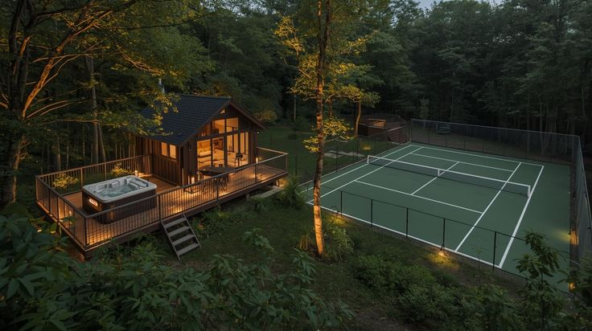
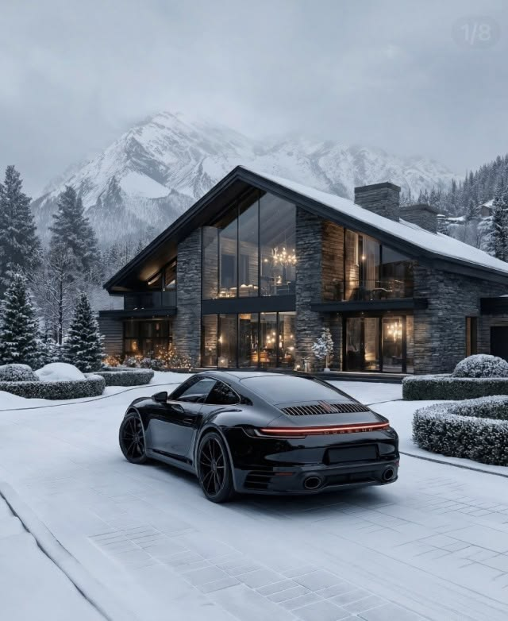

01 · ABOUT THE WORK
The Voice of the Forest and Conscience
Inspired by Georgian writer Vazha-Pshavela and adapted into a contemporary narrative by Vakhtang Imerlishvili, The Fawn’s Tale invites readers to experience the mountain forest from the perspective of a young fawn discovering freedom, danger, and the moral responsibility of humanity toward living nature.
“Nature speaks in every rustle of leaves and mountain wind — listening with empathy is the beginning of conscience.”
01. Perspective of Innocence
Told through the eyes of a fawn experiencing the beauty and fragility of the highland forest.
02. Reverence for Life
Explores harmony with nature, respect for every living creature, and ethical awareness.
03. Multilingual Reach
Presented in English, Georgian, and Arabic (Uyun Al-Ghazal) to share Georgian literary heritage globally.
02 · VISUAL IMPRESSIONS
Highland Landscape & Visuals
 Forest & Mountain Slopes
Forest & Mountain Slopes
 Mountain Flora & Horizon
Mountain Flora & Horizon

Natural Atmosphere
Visual & Concept Note03 · EDITIONS & ECOSYSTEM